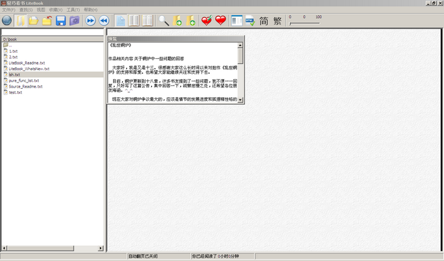

文件选择侧边栏是litebook2中能够快速方便地选择要打开文件的一个功能，通过ALT+D或是菜单“视图”－》“显示文件选择侧边栏”打开或是关闭。如下图所示：

上下选择文件 上、下方向键
回到上级目录 左方向键
进入当前子目录 右方向键
打开当前选择的文件 右方向键
在拼音输入栏和文件列表区切换 TAB键
Created with the Personal Edition of HelpNDoc: Full featured Documentation generator